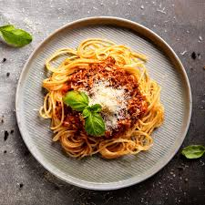

Featured Recipes
Discover a variety of recipes to delight your taste buds.
Try our most popular recipe: Spaghetti Bolognese!

Recipe List
| Dish | Preparation Time | Difficulty |
|---|---|---|
| Spaghetti Bolognese | 30 minutes | Medium |
| Vegetarian Pizza | 20 minutes | Easy |
| Beef Stew | 2 hours | Hard |
Recipe Categories
We classify our recipes into the following categories:
- Appetizers
- Main Courses
- Desserts
Our most popular main courses:
- Spaghetti Bolognese
- Vegetarian Pizza
- Beef Stew
How to Make Spaghetti Bolognese
Here is a simple recipe for our classic Spaghetti Bolognese:
Ingredients:
- 200g (7 oz) spaghetti
- 1 tablespoon olive oil
- 1 onion, finely chopped
- 2 garlic cloves, minced
- 400g (14 oz) ground beef
- 1 can (400g/14 oz) of diced tomatoes
- 2 tablespoons tomato paste
- 1 teaspoon dried oregano
- 1 teaspoon dried basil
- Salt and pepper to taste
- Grated Parmesan cheese (optional)
Instructions:
- Cook the spaghetti according to the package instructions. Drain and set aside.
- In a large skillet, heat the olive oil over medium heat. Add the onion and garlic and sauté until softened.
- Add the ground beef and cook until browned, breaking it up into smaller pieces as it cooks.
- Stir in the diced tomatoes, tomato paste, oregano, and basil. Season with salt and pepper.
- Simmer the sauce for 15-20 minutes, stirring occasionally, until thickened.
- Serve the sauce over the cooked spaghetti and sprinkle with grated Parmesan cheese, if desired.
- Enjoy your homemade Spaghetti Bolognese!